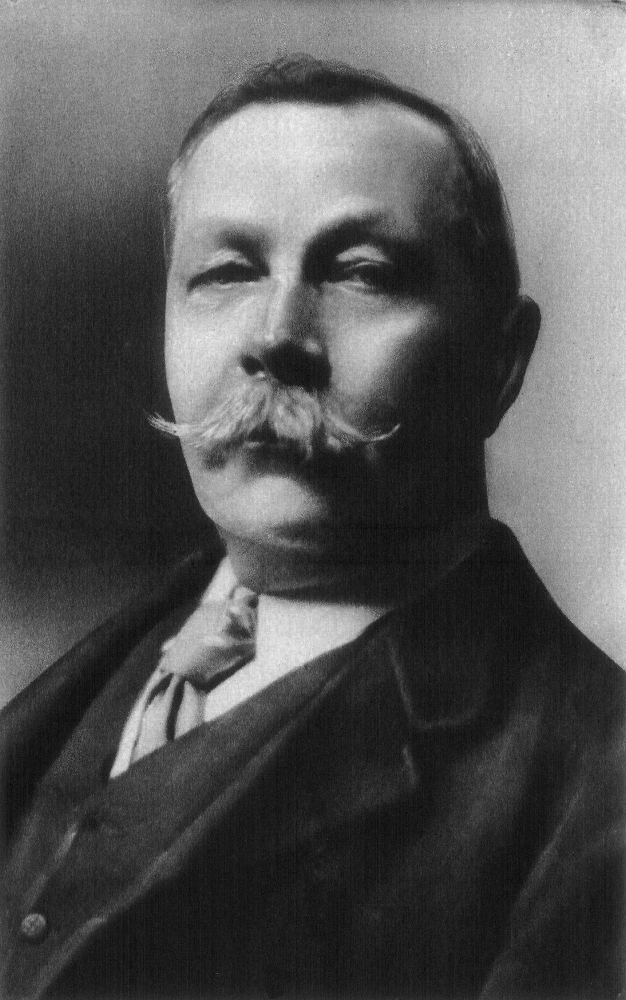

Sir Arthur Conan Doyle foi um médico e escritor britânico, nascido em 1859,
amplamente reconhecido como o criador de Sherlock Holmes. Formado em medicina
pela Universidade de Edimburgo, Doyle levou para a literatura seu olhar clínico,
sua lógica rigorosa e o interesse pelo raciocínio científico — elementos que se
tornariam a base do método dedutivo de Holmes.
A inspiração para o personagem veio do Dr. Joseph Bell, professor de Doyle,
conhecido por diagnosticar pacientes apenas pela observação minuciosa. Ao unir
ciência, narrativa envolvente e mistério, Doyle revolucionou a literatura
policial e estabeleceu padrões que influenciam o gênero até os dias atuais.
Embora tenha escrito romances históricos, aventuras e obras de ficção científica,
foi através de Sherlock Holmes que Sir Arthur Conan Doyle alcançou reconhecimento
mundial, deixando um legado literário que atravessa gerações.
